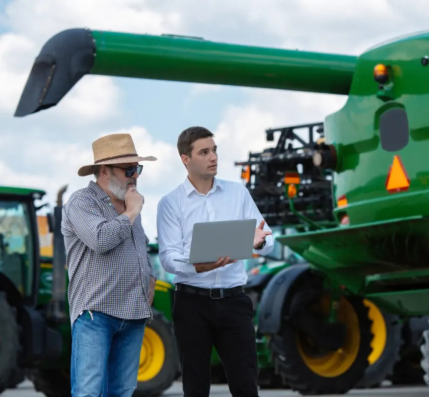
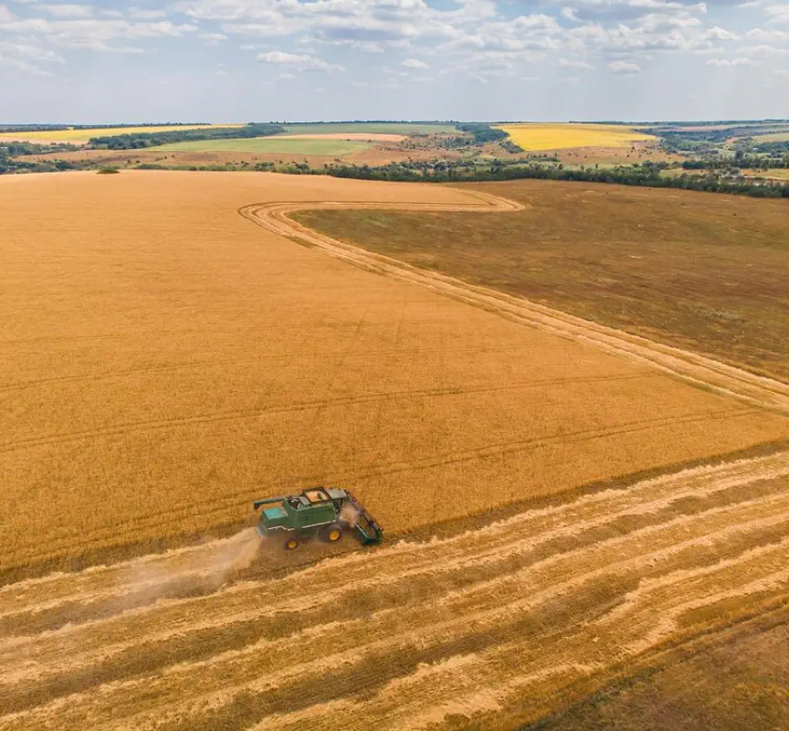
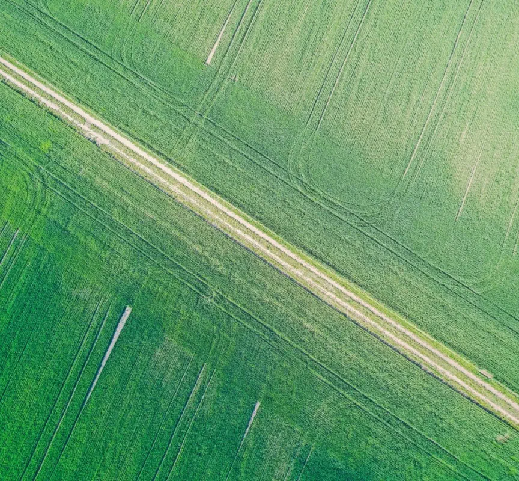
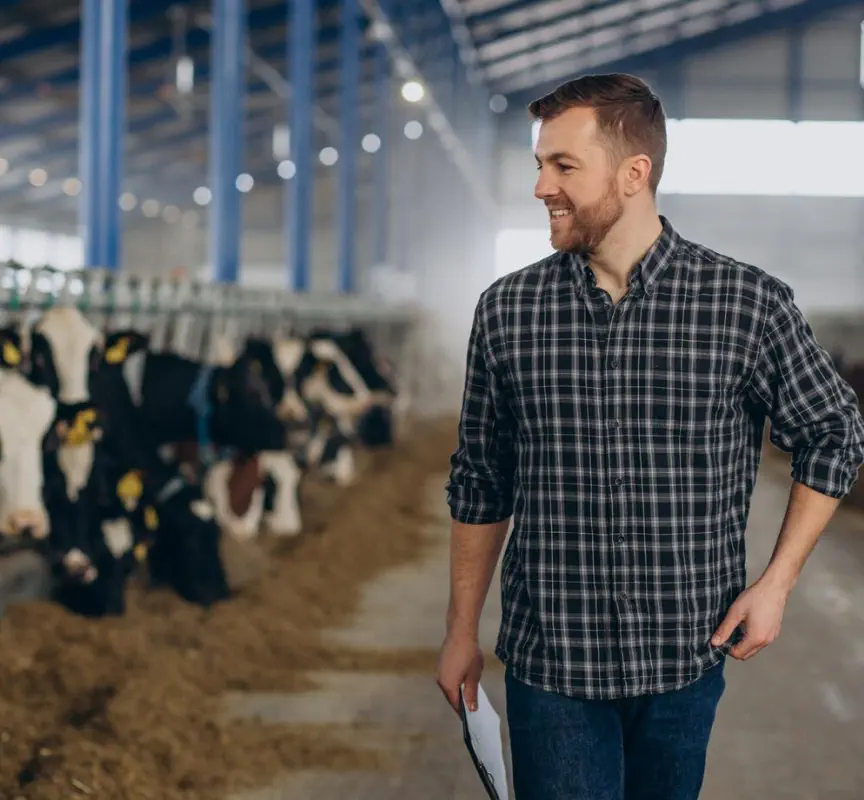
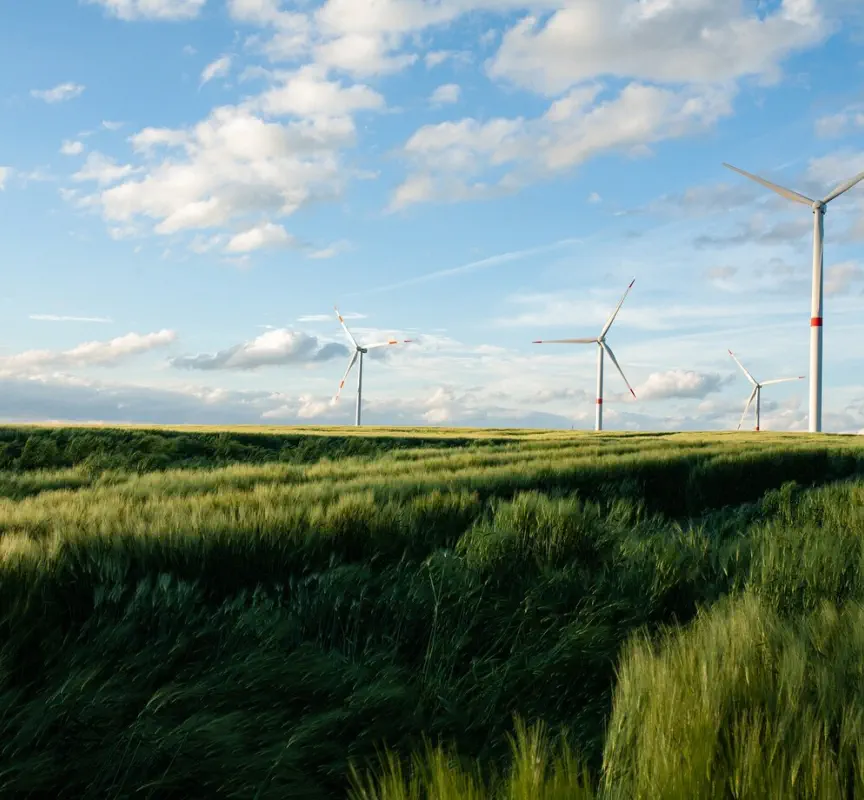
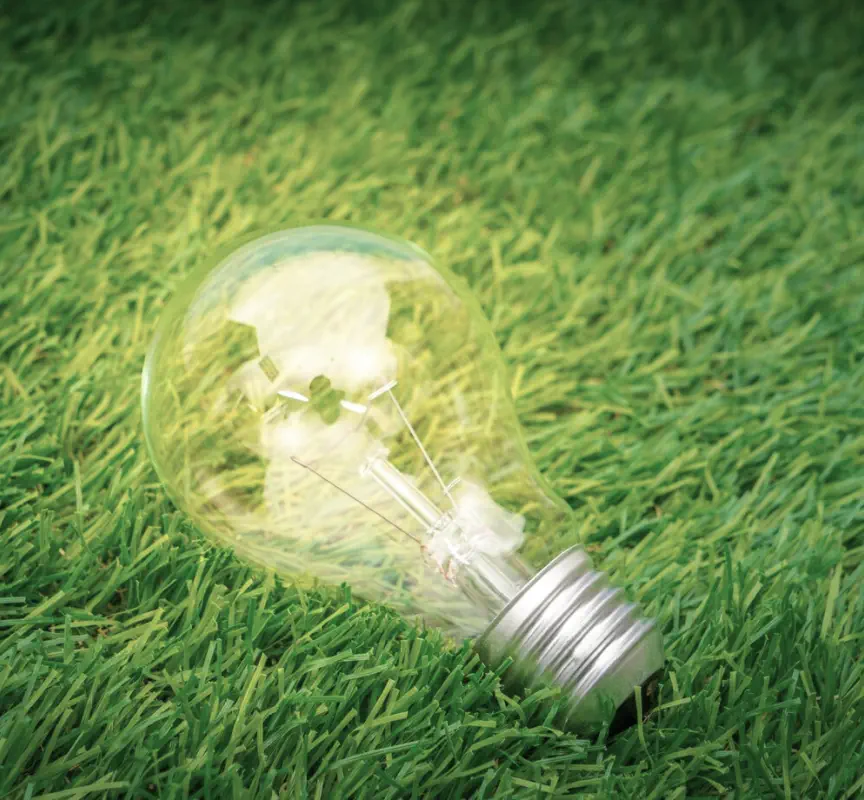

Наши
проекты
Русагро Тех — дочерняя ИТ-компания ГК «Русагро», обеспечивающая безопасный рост и развитие бизнеса за счет внедрения ИТ-решений.

Стартовал приём заявок национальной премии за вклад в развитие технологий искусственного интеллекта «Лидеры ИИ»

Завершен первый этап проекта доработки и внедрения цифровой платформы (системы класса MES)

Русагро Тех подготовила задачу для участников международного конкурса AI Challenge
Русагро Тех поделились опытом цифровизации и внедрения искусственного интеллекта в проекты

Стартовал приём заявок национальной премии за вклад в развитие технологий искусственного интеллекта «Лидеры ИИ»

Завершен первый этап проекта доработки и внедрения цифровой платформы (системы класса MES)

Русагро Тех подготовила задачу для участников международного конкурса AI Challenge
Русагро Тех поделились опытом цифровизации и внедрения искусственного интеллекта в проекты